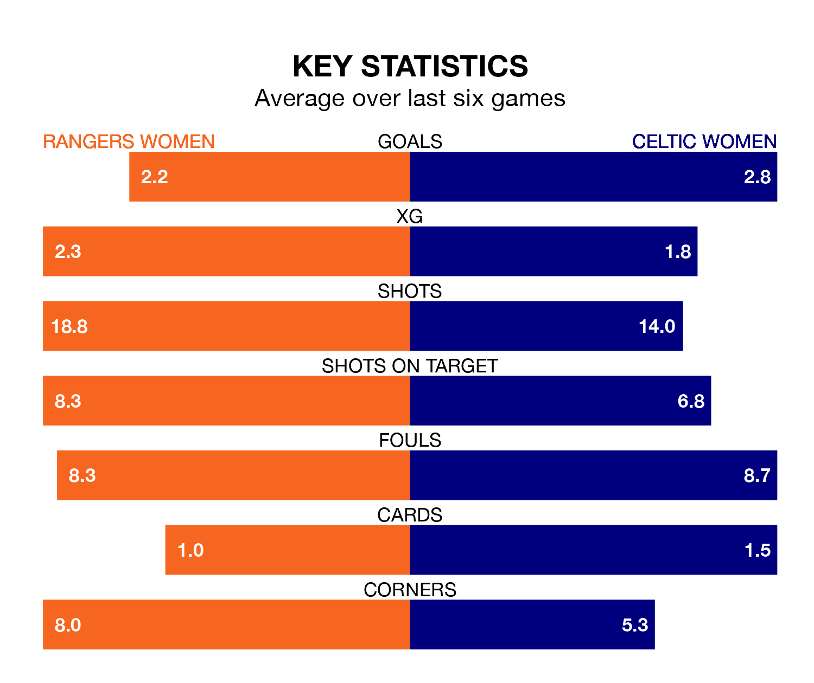

SWPL 1's top two sides face each other at the Broadwood Stadium in Monday lunchtime's kick-off, when second-placed Rangers Women host Celtic Women.
Rangers have picked up 23 wins and three draws from 28 games so far this season, and sit on the same number of points as the visitors going into the 12pm match.
Celtic, meanwhile, have won 23 and drawn three, picking up 72 points.
With 119 goals in 28 games so far this season, Celtic are the league's highest scorers with 4.2 goals per game. And they are conceding fewer than average, letting in 17 goals at a rate of 0.6 per game.
Rangers are also above average scorers, with 3.8 goals per game, compared to a league average of 2.1. They have conceded 0.6 goals per game.
In Kelsey Daugherty, the away team can rely on one of the league's safest pair of hands. She has kept 11 clean sheets in her 23 appearances this season, and no 'keeper has prevented the opposition scoring more often in SWPL 1.
In the hosts' net, Jenna Fife has 10 clean sheets in 22 games.
Rangers are in reasonable form in SWPL 1, with four wins and two losses from their last six games.
With five wins and a draw over that period, Celtic's form is better – they have taken 16 points from 18, compared to Rangers's 12.
In the last 10 years, Rangers and Celtic have played each other on 15 occasions. They won six each, and they drew three times.
On average, Rangers scored 1.1 goals and Celtic 1.1 in those matches.
Their last meeting was on March 17, when Celtic won 2-1 at home.
Rangers's last match was on Wednesday, a 3-0 win against Hearts Women, with Bance Bance, Chelsea Cornet and Elizabeth Arnott getting the goals for Rangers.
Celtic drew 2-2 with Glasgow City Women last time out, also on Wednesday, with Caitlin Hayes and Lee Alexander (own goal) on the scoresheet.
Updated: 12:00 (UTC), 02/05/24